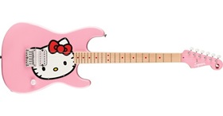
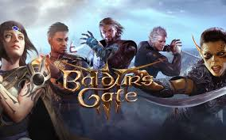

Background
About Me
Hello world. My name is Abby A. Garcia. I like to describe myself as a jack of all trades master of none, yet.
I attended GCE Lab High School ( a project based learning school), and came into IIT wanting to become a particle physicist.
Due to financial reasons, I decided ITM was a more viable career option and aim to obtain my CompTIA+ & Network+ certification by the end of my third year.
Recently, law school has entered my radar and by mixing my tech background with law I hope to become an intellectual property lawyer.
These are my hobbies: reading, writing, doing physics for fun, music, video games, and ending up in the most random adventures.
Media
My favorite book: The Violent Bear it Away by Flannery O'Connor

My dream guitar: Fender x Hello Kitty Pink Stratocaster- $700:(
My favorite video game (even though it almost killed my computer): Baldur's Gate 3
